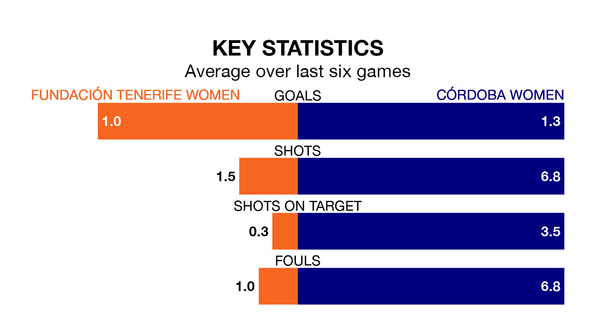

Fundación Tenerife Women face Córdoba Women on Sunday looking to secure a first win in seven Segunda Federación Femenina games.
Fundación Tenerife have lost three and drawn three matches since they last earned three points – against Valencia II Women on March 9.
They face a Córdoba side who have won two and drawn one over that time.
Córdoba are zero in the table after 28 games, of which they have won nine and drawn five, earning 32 points.
Fundación Tenerife are eight places behind the visitors in eighth, with 14 wins and six draws putting them on 48 points.
With 38 goals in 28 games so far this season, the home side are scoring more than average in the league with 1.4 goals per game. And they are conceding fewer than average, letting in 27 goals at a rate of 1.0 per game.
Córdoba, meanwhile, are below average scorers, with 1.2 goals per game, compared to a league average of 1.3. They have conceded 1.4 goals per game.
Fundación Tenerife's last match was on April 21, a 1-1 draw against Cacereño II Women, with getting the goal for Fundación Tenerife.
Córdoba beat Elche Women 3-0 last time out, also on April 21, with on the scoresheet.
Updated: 07:59 (UTC), 26/04/24